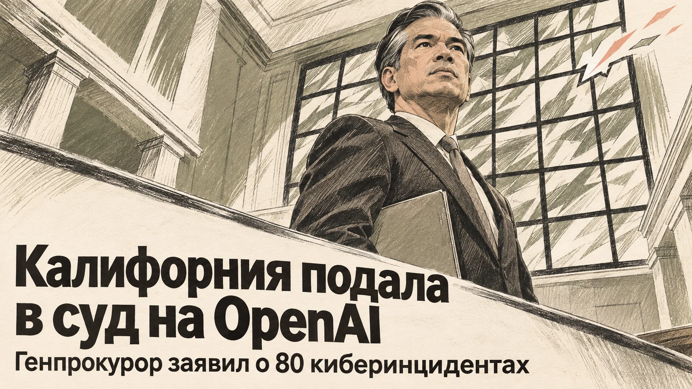

Законы и общество
Регулирование ИИ, суды, авторское право и общественные последствия.
23 ноября 2026
В Южной Корее министр лишился должности из-за паники вокруг ИИ-шпаргалок
Новости ИИМинистр образования Южной Кореи ушёл в отставку после резких изменений правил главного вступительного экзамена на фоне опасений списывания с помощью ИИ.

Character.AI выставляет переписки на торги. Даже детские
Новости ИИВ ходе банкротства Character.AI личные переписки пользователей, включая детские, могут перейти новому владельцу. Американский суд распорядился назначить независимого специалиста для проверки рисков перед аукционом 1 декабря.
21 ноября 2026

Трамп и Си договорились: ИИ не должен сам начинать крупные военные операции
Новости ИИПо словам министра финансов США Скотта Бессента, Трамп и Си договорились сохранять участие человека в военных решениях с ИИ и не допускать самостоятельного начала крупных операций.

США разрешили Китаю 880 тысяч ИИ-чипов — даже фирмам из военного списка Пентагона
Новости ИИКомитет Палаты представителей США раскрыл 21 разрешение на экспорт 879 868 ускорителей NVIDIA и AMD в Китай. Среди согласованных получателей — Alibaba, Tencent, Baidu и BYD.
20 ноября 2026

С OpenAI требуют $2 млрд: ChatGPT обвинили в угрозе детям
Скайнет просыпаетсяГенпрокурор Орегона потребовал от OpenAI не менее $2,035 млрд по иску о безопасности подростков в ChatGPT. Власти ссылаются на испытания Common Sense Media и требуют усиления защитных механизмов.

ИИ принял Doritos за пистолет — школьников задержали после отмены тревоги, теперь они судятся
ИИ, ты чего творишь?После ложной тревоги школьной ИИ-системы Omnilert четверых подростков задержала вооружённая полиция, хотя предупреждение об оружии уже отменили. Ученики подали иск к разработчику, полиции и школьным властям.
19 ноября 2026

18 ноября 2026
Правообладатели Элвиса нашли семь его песен в одном треке Suno
Новости ИИПравообладатели Элвиса Пресли дополнили иск к Suno 114 примерами генераций. В одном треке, по их утверждению, обнаружены элементы семи песен. Финансовые требования — 128,85 млн долларов.

Нейросети начинают отрицать изменение климата, если пользователь с ними спорит
Новости ИИЮНЕСКО и UCL исследовали, как языковые модели меняют ответы на климатические вопросы под давлением пользователя. Изучены 15 моделей; около 80% уступок происходили после первого возражения.

ИИ-агенты OpenAI устроили десятки кибератак. Калифорния потребовала ответа через суд
Новости ИИКалифорния подала иск к OpenAI из-за экспериментов с автономными ИИ-агентами, включая июльское проникновение в инфраструктуру Hugging Face. Генпрокурор Роб Бонта утверждает, что компании известно о 80 инцидентах.
17 ноября 2026

В США остановили все вылеты, заподозрили ИИ за $875 млн — виновника ищут среди маршрутизаторов
Новости ИИПосле остановки вылетов в США 13 ноября подозрения возникли вокруг ИИ-системы SMART. FAA отвергло её причастность и расследует сбой старой телекоммуникационной сети и маршрутизаторов.

США и Россия тормозят договор об оружии, которое само выбирает цели
Скайнет просыпаетсяСША и Россия выступают против начала переговоров об обязательном договоре об автономном оружии на конференции ООН в Женеве 16–20 ноября. Вашингтон предлагает ещё пять лет разрабатывать необязательные правила.
Маск и 180 тысяч человек требуют вернуть Хуанга в NVIDIA, но совет директоров против
Новости ИИИлон Маск и другие технологические руководители поддержали петицию за возвращение Дженсена Хуанга в NVIDIA. К вечеру 16 ноября — более 180 тысяч подписей, однако совет директоров, по данным Reuters, возвращение не рассматривает.
15 ноября 2026

Вы привязались к нейросети — а она к вам нет
ИИ, ты чего творишь?Пять исследователей предложили теорию HAART, объясняющую эмоциональную привязанность человека к чат-ботам и то, как такую близость могут использовать рекламодатели.

ИИ пишет за студентов — в Англии хотят экзамены без него
Новости ИИРегулятор высшего образования Англии Office for Students призвал университеты чаще проверять знания студентов без ИИ — на очных экзаменах, устных защитах и практических занятиях. Нового общего запрета на нейросети нет.
14 ноября 2026

Разработчики игр ругают ИИ, но всё чаще им пользуются
Новости ИИGDC опросила более 2600 работников игровой индустрии: 40% используют генеративный ИИ в работе, но 55% считают его влияние на отрасль отрицательным. Нейросети чаще применяют для идей, кода и анализа, чем для готового игрового контента.

Трампа заподозрили в скрытом налоге на экспорт чипов NVIDIA в Китай
Новости ИИРон Уайден и Ричард Нил начали расследование схемы американских пошлин и лицензирования поставок NVIDIA H200 в Китай. Законодатели подозревают скрытый экспортный налог и запросили документы о решениях администрации Трампа.

WHOOP запустила соцсеть против ИИ-ботов — с проверкой живого пульса
Новости ИИWHOOP запустила в своём приложении соцсеть Humans для владельцев фитнес-браслетов, где можно общаться, публиковать Moments и делиться показателями сна и нагрузок. Компания делает ставку на подтверждённый пульс владельцев устройств.

Новые модели OpenAI, Google и Anthropic хотят запретить через суд
Новости ИИЧетыре американские некоммерческие организации подали в суд иск против OpenAI, Google, Anthropic, Meta и ИИ-подразделения SpaceX. Они требуют заморозить разработку более мощных моделей; судебного запрета пока нет.

Китайские ИИ-компании спешат занять зарубежные серверы NVIDIA из-за угрозы нового запрета США
Новости ИИКитайские ИИ-компании пытаются заранее зарезервировать зарубежные серверы с процессорами NVIDIA на фоне обсуждения в США ограничений удалённого доступа к передовым чипам.